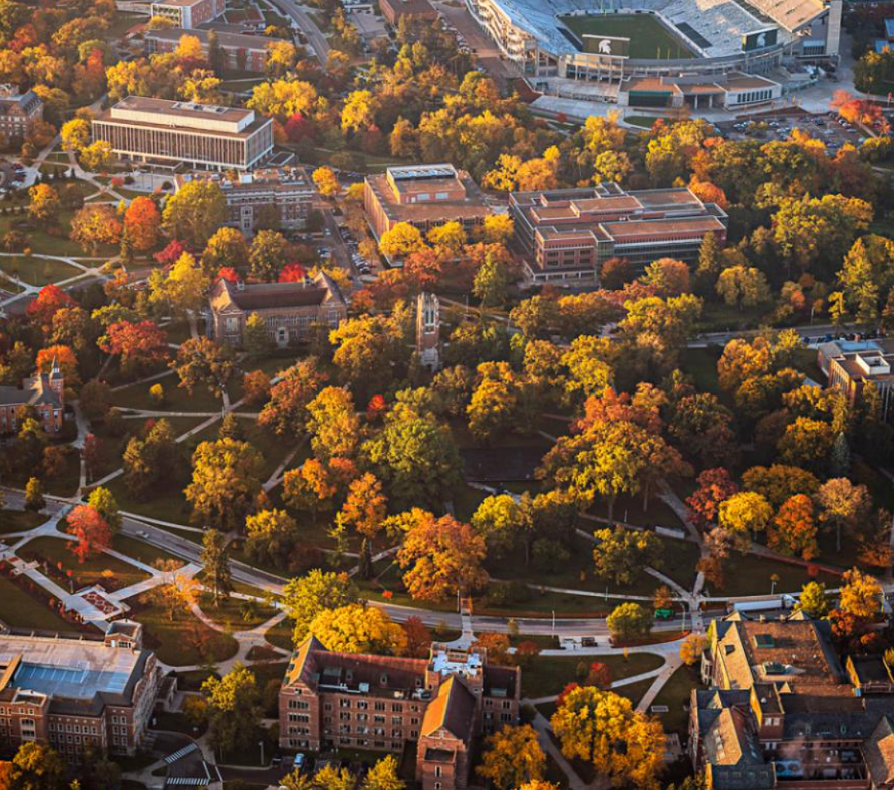
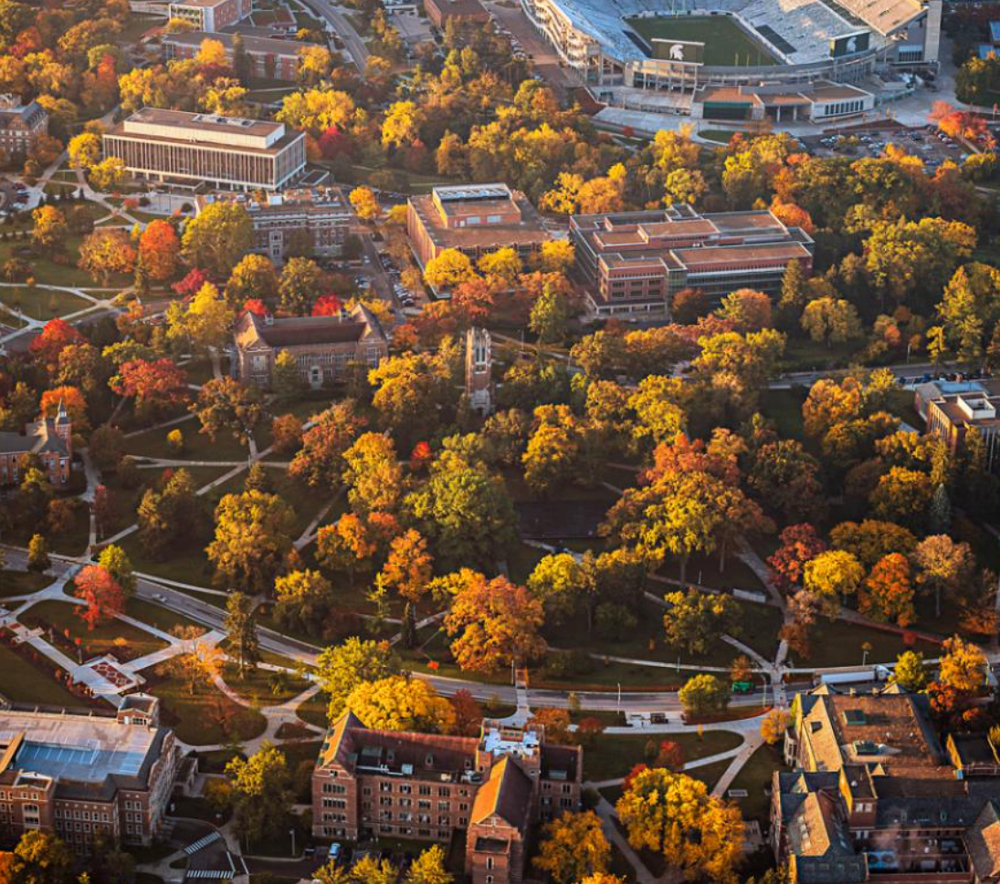

Welcome to my blog. This site is to host information on my previous work experience and give viers a look into my life. I grew up in Brighton, Michigan and lived there until the end of high school. After graduating from Brighton High School, I went to get my bachelor’s degree in supply chain management with a minor in information technology. I have two siblings, who both also attended MSU. In my free time, I enjoy hanging out with my roommates, watching movies and rock climbing. I include photos below of my hometown, family and more!
Thanks for stopping by my online webpage! Feel free to check out more of my professional experience on the “My Work” section.
 
